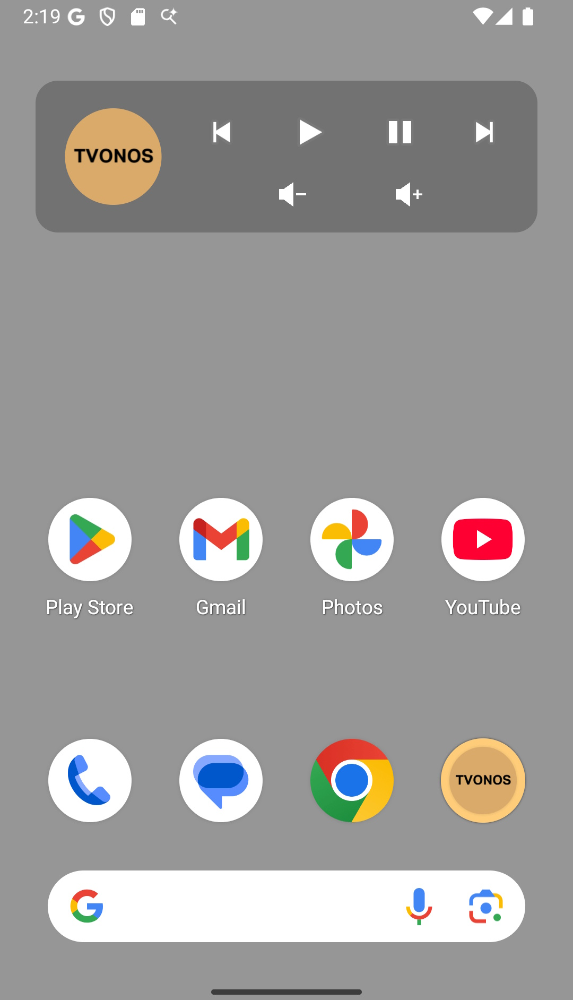
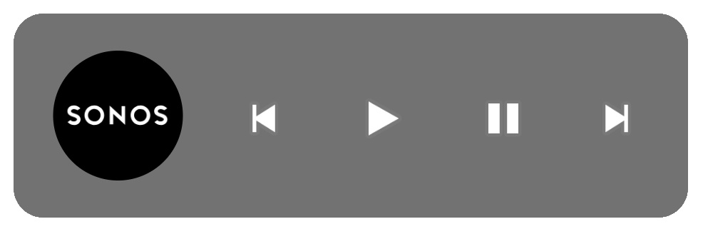

Phone/Tablet Widget
A phone/tablet Widget provides basic controls
without the need to open TVONOS or
the Sonos App.

You can manually add the TVONOS Widget to your phone or tablet home screen (it is not enabled by default). The default controls for Play, Pause, Skip and volume control are available with selecting the icon opening TVONOS. In the TVONOS settings to can customise 2 things
- Hide the volume controls
- Change the icon click to open the official Sonos App (if installed)
